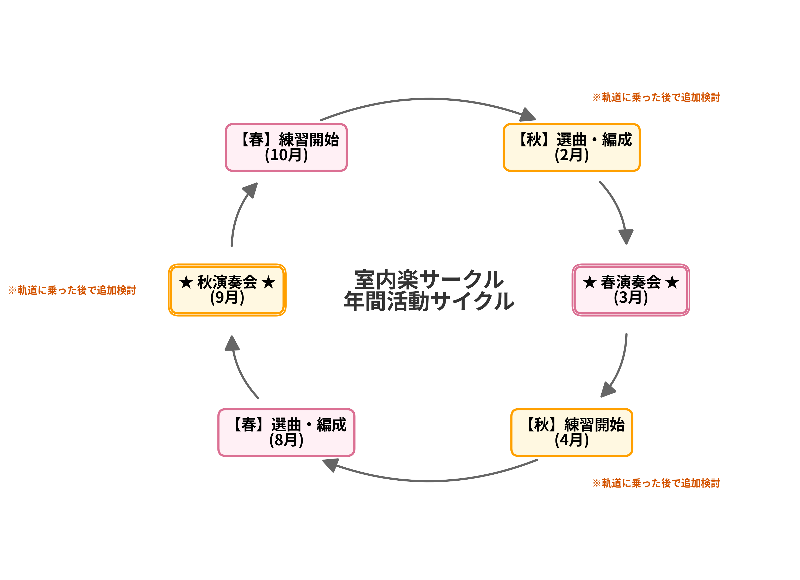

演奏会は年1回。本番から逆算して、選曲・グループ編成からじっくり準備を進めていきます。ここでは、そのおおまかな流れをご紹介します。
まずは春の演奏会を軸とした年1回のサイクルからスタートし、軌道に乗った後で秋の演奏会を加えた年2回サイクルへの拡張を検討します。

団員全員を対象にアンケートを実施し、次回演奏会の選曲とグループ編成を決めます。詳しいプロセスは下記をご覧ください。
選曲・編成アンケートで分かれたグループごとに、練習の日程・場所を相談し、各自で活動していく予定です。月1回の練習を目安とし、2曲を担当する方は月2回、3曲なら月3回程度の活動になります。メンバーの希望・都合が合えば、頻度を自由に増やしていただいて構いません。
半年以上かけて準備してきた成果を、本番の舞台でお届けします。
本番を終えた後は、みんなで打ち上げ（飲み会）をして一区切り。ここで来年に向けた話が出ることもあります。
選曲とグループ編成は、一度のアンケートで終わりではなく、演奏会をまたいで少しずつバランスを取っていくことを想定しています。
メンバーからやりたい曲を募集します。
参加したい曲数や、挙がった候補曲それぞれへの意欲度・希望順位、その他の希望をアンケートで募ります。
団全体としての最適化とパートバランスを考慮しながら、選曲とグループ編成を決定します。
編成結果に対するメンバーごとの希望満足度を評価します。満足度が低かった方については、次回演奏会での優先度を考慮するなど、演奏会をまたいだバランス調整につなげていく予定です。
| 演奏スタイル | プログラムは基本的に全楽章を通して演奏する形を予定しています。一曲とじっくり向き合う時間を大切にしたいと考えています。 |
|---|---|
| 今後の検討事項 | まずは年1回の継続開催を目指しますが、メンバーが十分集まり次第、その意向も踏まえて演奏会を年2回に増やすことや、単一楽章のみを演奏する会の開催なども今後検討していく予定です。 |